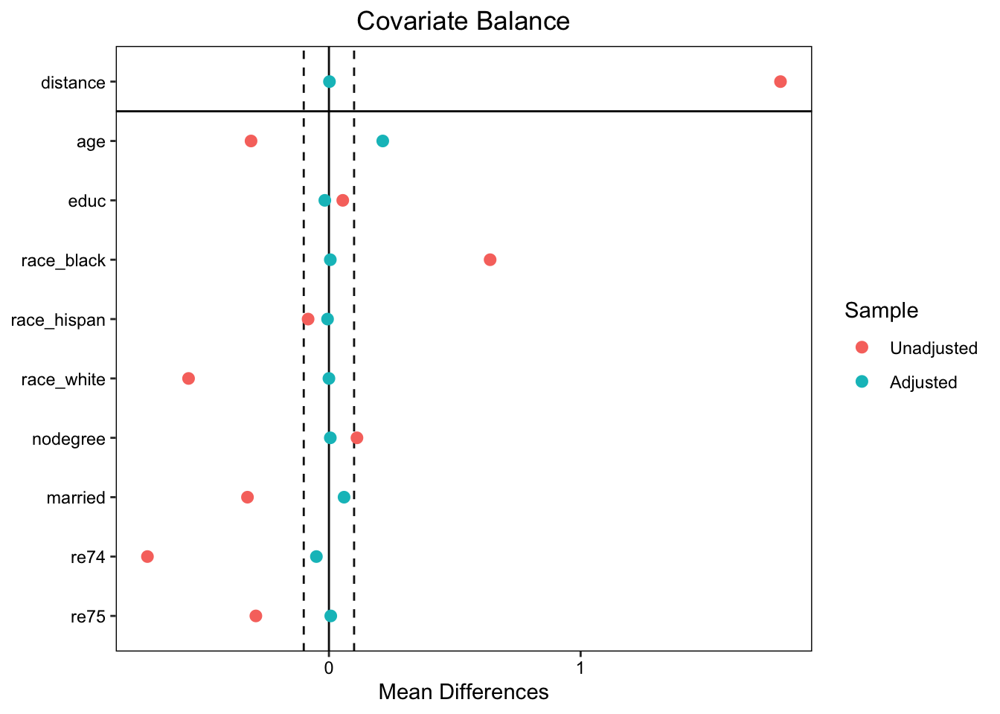

#install.packages("MatchIt")
#install.packages("cem")
library(MatchIt)
library(cem)Loading required package: tcltkLoading required package: lattice
How to use CEM? Type vignette("cem")Matching is a powerful tool for causal inference in observational studies. It helps reduce selection bias by constructing a comparison group that closely resembles the treatment group on observed covariates. This tutorial walks you through key types of matching methods and strategies, from simple exact matching to more flexible or model-based approaches. You’ll learn how to implement matching in R, interpret matched results, and decide when to combine matching with regression.
By the end of this tutorial, you will be familiar with:
1. Exact Matching
2. Distance Matching (e.g., Mahalanobis distance)
3. Propensity Score Matching (PSM)
4. Coarsened Exact Matching (CEM)
5.Matching and Regression Adjustment
In this tutorial, we will primarily use the MatchIt package in R, which provides a unified and user-friendly interface for implementing a wide range of matching methods, including exact matching, Mahalanobis distance matching, and propensity score matching. MatchIt is widely used in applied causal inference and integrates smoothly with tools for assessing balance and post-matching analysis. For methods not currently supported by MatchIt – such as Coarsened Exact Matching (CEM) – we will use dedicated package cem. These tools allow us to explore the strengths and limitations of different approaches and understand how implementation choices can affect our causal estimates.
Loading required package: tcltkLoading required package: lattice
How to use CEM? Type vignette("cem")The dataset we’re using for this tutorial is the lalonde dataset from the MatchIt package. It comes from a well-known job training study and includes both treated and control groups, as well as covariates like age, education, race, and pre-treatment earnings. This dataset is widely used in causal inference because it’s simple, real, and flexible—it works well with all the matching methods we’re covering, including exact matching, distance matching, propensity score matching, coarsened exact matching, entropy balancing, and matching combined with regression.
treat age educ race married nodegree re74 re75 re78
NSW1 1 37 11 black 1 1 0 0 9930.0460
NSW2 1 22 9 hispan 0 1 0 0 3595.8940
NSW3 1 30 12 black 0 0 0 0 24909.4500
NSW4 1 27 11 black 0 1 0 0 7506.1460
NSW5 1 33 8 black 0 1 0 0 289.7899
NSW6 1 22 9 black 0 1 0 0 4056.4940Exact matching is the most straightforward matching method, where treated and control units are matched only if they have identical values on all selected covariates. It guarantees perfect covariate balance within matched pairs or groups, making it conceptually clean and easy to interpret. However, it becomes difficult to implement when covariates are continuous or when there are many variables, as exact matches become increasingly rare. Despite this limitation, exact matching is a valuable foundation for understanding more flexible matching methods and is especially useful in clean, low-dimensional datasets.
Call:
matchit(formula = treat ~ race, data = lalonde, method = "exact")
Summary of Balance for All Data:
Means Treated Means Control Std. Mean Diff. Var. Ratio eCDF Mean
raceblack 0.8432 0.2028 1.7615 . 0.6404
racehispan 0.0595 0.1422 -0.3498 . 0.0827
racewhite 0.0973 0.6550 -1.8819 . 0.5577
eCDF Max
raceblack 0.6404
racehispan 0.0827
racewhite 0.5577
Summary of Balance for Matched Data:
Means Treated Means Control Std. Mean Diff. Var. Ratio eCDF Mean
raceblack 0.8432 0.8432 0 . 0
racehispan 0.0595 0.0595 0 . 0
racewhite 0.0973 0.0973 0 . 0
eCDF Max Std. Pair Dist.
raceblack 0 0
racehispan 0 0
racewhite 0 0
Sample Sizes:
Control Treated
All 429 185
Matched (ESS) 121 185
Matched 429 185
Unmatched 0 0
Discarded 0 0After performing exact matching on the race variable using the Lalonde dataset, we see that covariate balance improved substantially. Before matching, the distribution of race was highly imbalanced between treated and control groups—for example, 84% of treated units were Black, compared to only 20% of controls. After matching, the race proportions are perfectly aligned across groups, as expected from exact matching: every matched pair has the same race category.
The summary reports that all 185 treated units were matched to 429 control units, with an effective sample size (ESS) of 121 for the control group. ESS tells us how much unique, independent information those matched controls contribute—after accounting for weighting or reuse. In the output, the ESS for controls is 121, even though 429 were matched.This means many control units were reused, which is common when matching with replacement.
The key takeaway here is that while exact matching on one variable (race) ensures perfect balance on that variable, it does not address imbalance on other covariates like age or education. Also, although no units were discarded, the ESS reminds us that reuse of controls may reduce precision when estimating treatment effects.
# Get matched data
matched_data <- match.data(match_single)
# Estimate ATT as difference in means
mean(matched_data$re78[matched_data$treat == 1]) -
mean(matched_data$re78[matched_data$treat == 0])[1] -635.0262After performing exact matching, we can estimate the treatment effect using the matched data. By taking the difference between the means of treated and control groups, we get the Average Treatment Effect on the Treated (ATT). In this case, the result is –635.03, which means that, on average, individuals who received the treatment earned $635 less than their matched counterparts who did not. While the matching step ensures that the two groups are balanced on the covariate used (race), this negative result suggests that race alone may not be sufficient to control for all confounding. Adding more covariates to the matching process may give a more accurate estimate. That’s why we are matching on multiple variables next.
# Exact Matching on multiple variables (e.g., race, education, and age)
match_multi <- matchit(treat ~ race + educ + age, data = lalonde, method = "exact")
summary(match_multi)
Call:
matchit(formula = treat ~ race + educ + age, data = lalonde,
method = "exact")
Summary of Balance for All Data:
Means Treated Means Control Std. Mean Diff. Var. Ratio eCDF Mean
raceblack 0.8432 0.2028 1.7615 . 0.6404
racehispan 0.0595 0.1422 -0.3498 . 0.0827
racewhite 0.0973 0.6550 -1.8819 . 0.5577
educ 10.3459 10.2354 0.0550 0.4959 0.0347
age 25.8162 28.0303 -0.3094 0.4400 0.0813
eCDF Max
raceblack 0.6404
racehispan 0.0827
racewhite 0.5577
educ 0.1114
age 0.1577
Summary of Balance for Matched Data:
Means Treated Means Control Std. Mean Diff. Var. Ratio eCDF Mean
raceblack 0.7500 0.7500 0 . 0
racehispan 0.0694 0.0694 0 . 0
racewhite 0.1806 0.1806 0 . 0
educ 10.5833 10.5833 0 0.9923 0
age 21.6389 21.6389 0 0.9923 0
eCDF Max Std. Pair Dist.
raceblack 0 0
racehispan 0 0
racewhite 0 0
educ 0 0
age 0 0
Sample Sizes:
Control Treated
All 429. 185
Matched (ESS) 46.51 72
Matched 85. 72
Unmatched 344. 113
Discarded 0. 0After performing exact matching on multiple covariates (race, educ, and age), the means for all covariates were perfectly aligned between the treated and control groups. This is expected from exact matching, which only retains pairs that are exactly the same on the specified covariates.
However, this improved balance comes at a cost: out of 185 treated units, only 72 could be matched; and from 429 controls, only 85 were used. The ESS for controls drops even further to around 46, reflecting the downweighting of reused or overlapping units. This is a common trade-off with exact matching—perfect balance, but reduced sample size and precision. Still, it serves as a strong baseline for comparing other, more flexible matching methods.
# Get matched data
matched_data <- match.data(match_multi)
# Estimate ATT as difference in means
mean(matched_data$re78[matched_data$treat == 1]) -
mean(matched_data$re78[matched_data$treat == 0])[1] -381.3731The ATT is –381, meaning treated individuals earned $381 less on average than their matched control counterparts. This is smaller (less negative) than our earlier estimate from matching only on race (–635), suggesting that adding more covariates has helped create a more comparable control group and reduced confounding. However, because exact matching on multiple variables is stricter, fewer treated units were matched, which may affect the precision of our estimate.
Distance matching selects control units for each treated unit based on how similar they are across multiple covariates, using a distance metric like Mahalanobis distance. This approach works well with continuous variables and doesn’t require exact matches. It accounts for differences across all matching variables simultaneously and selects the best matches based on how “close” units are in multivariate space. Below, we use Mahalanobis distance matching to compare treated and control units in the Lalonde dataset based on age, education, and race.
match_mahal <- matchit(treat ~ age + educ + race,
data = lalonde,
method = "nearest",
distance = "mahalanobis")
# ratio=3
# include this line for k-nearest-neighbor where k=3)
# Summary of matching results
summary(match_mahal)
Call:
matchit(formula = treat ~ age + educ + race, data = lalonde,
method = "nearest", distance = "mahalanobis")
Summary of Balance for All Data:
Means Treated Means Control Std. Mean Diff. Var. Ratio eCDF Mean
age 25.8162 28.0303 -0.3094 0.4400 0.0813
educ 10.3459 10.2354 0.0550 0.4959 0.0347
raceblack 0.8432 0.2028 1.7615 . 0.6404
racehispan 0.0595 0.1422 -0.3498 . 0.0827
racewhite 0.0973 0.6550 -1.8819 . 0.5577
eCDF Max
age 0.1577
educ 0.1114
raceblack 0.6404
racehispan 0.0827
racewhite 0.5577
Summary of Balance for Matched Data:
Means Treated Means Control Std. Mean Diff. Var. Ratio eCDF Mean
age 25.8162 26.0973 -0.0393 0.6929 0.0316
educ 10.3459 10.5892 -0.1210 0.7775 0.0174
raceblack 0.8432 0.4703 1.0259 . 0.3730
racehispan 0.0595 0.0595 0.0000 . 0.0000
racewhite 0.0973 0.4703 -1.2585 . 0.3730
eCDF Max Std. Pair Dist.
age 0.0919 0.3460
educ 0.1243 0.3092
raceblack 0.3730 1.0259
racehispan 0.0000 0.0000
racewhite 0.3730 1.2585
Sample Sizes:
Control Treated
All 429 185
Matched 185 185
Unmatched 244 0
Discarded 0 0# Extract matched data
matched_mahal <- match.data(match_mahal)
# Estimate ATT
mean(matched_mahal$re78[matched_mahal$treat == 1]) -
mean(matched_mahal$re78[matched_mahal$treat == 0])[1] 76.39395After performing 1-to-1 Mahalanobis distance matching, we estimate the ATT using the matched sample. The result is 76.39, meaning that treated individuals earned $76 more on average than their matched control counterparts. This positive treatment effect contrasts with earlier estimates from exact matching, which were negative. Matching on multiple continuous covariates using Mahalanobis distance helps improve comparability and may lead to more accurate effect estimates—though we should still assess covariate balance and interpret results cautiously, especially with a modest effect size like this.
Propensity Score Matching (PSM) is a widely used method for reducing selection bias in observational studies. Instead of matching directly on all covariates, PSM first estimates the propensity score—the probability of receiving the treatment given observed covariates – typically using logistic regression. Treated and control units are then matched based on how close their propensity scores are. This simplifies the matching problem to a one-dimensional scale while attempting to balance the distribution of all covariates. Below, we estimate the propensity score and perform nearest-neighbor matching to evaluate the treatment effect.
# Propensity score matching (1-to-1 nearest neighbor)
match_psm <- matchit(
treat ~ age + educ + race + nodegree + married + re74 + re75,
data = lalonde,
method = "nearest", # matching approach
distance = "logit", # propensity score model
caliper = 0.1, # optional: only match a control unit if its propensity scoree is within 0.1 of the treated unit's score. Avoid bad matches.
replace = TRUE # allow controls to be reused
)
# Summary of matching result
summary(match_psm)
Call:
matchit(formula = treat ~ age + educ + race + nodegree + married +
re74 + re75, data = lalonde, method = "nearest", distance = "logit",
replace = TRUE, caliper = 0.1)
Summary of Balance for All Data:
Means Treated Means Control Std. Mean Diff. Var. Ratio eCDF Mean
distance 0.5774 0.1822 1.7941 0.9211 0.3774
age 25.8162 28.0303 -0.3094 0.4400 0.0813
educ 10.3459 10.2354 0.0550 0.4959 0.0347
raceblack 0.8432 0.2028 1.7615 . 0.6404
racehispan 0.0595 0.1422 -0.3498 . 0.0827
racewhite 0.0973 0.6550 -1.8819 . 0.5577
nodegree 0.7081 0.5967 0.2450 . 0.1114
married 0.1892 0.5128 -0.8263 . 0.3236
re74 2095.5737 5619.2365 -0.7211 0.5181 0.2248
re75 1532.0553 2466.4844 -0.2903 0.9563 0.1342
eCDF Max
distance 0.6444
age 0.1577
educ 0.1114
raceblack 0.6404
racehispan 0.0827
racewhite 0.5577
nodegree 0.1114
married 0.3236
re74 0.4470
re75 0.2876
Summary of Balance for Matched Data:
Means Treated Means Control Std. Mean Diff. Var. Ratio eCDF Mean
distance 0.5746 0.5741 0.0021 0.9878 0.0029
age 25.6776 24.1475 0.2138 0.5351 0.0770
educ 10.3388 10.3716 -0.0163 0.5773 0.0219
raceblack 0.8415 0.8361 0.0150 . 0.0055
racehispan 0.0601 0.0656 -0.0231 . 0.0055
racewhite 0.0984 0.0984 0.0000 . 0.0000
nodegree 0.7049 0.6995 0.0120 . 0.0055
married 0.1913 0.1311 0.1535 . 0.0601
re74 2118.4761 2361.9980 -0.0498 1.0376 0.0410
re75 1505.8050 1482.3283 0.0073 2.1018 0.0648
eCDF Max Std. Pair Dist.
distance 0.0492 0.0112
age 0.3333 1.2479
educ 0.0601 1.0980
raceblack 0.0055 0.0451
racehispan 0.0055 0.3004
racewhite 0.0000 0.0546
nodegree 0.0055 0.8774
married 0.0601 0.5162
re74 0.2186 0.6154
re75 0.2350 0.6437
Sample Sizes:
Control Treated
All 429. 185
Matched (ESS) 47.37 183
Matched 82. 183
Unmatched 347. 2
Discarded 0. 0# Extract matched dataset
matched_psm <- match.data(match_psm)
# Estimate ATT
mean(matched_psm$re78[matched_psm$treat == 1]) -
mean(matched_psm$re78[matched_psm$treat == 0])[1] 1645.175After performing Propensity Score Matching, we estimate the ATT using the matched dataset. The result is 1645.18, which means that treated individuals earned $1,645 more on average than their matched control counterparts in 1978. This positive effect is substantially larger than the results we observed with exact or Mahalanobis matching. By matching on the estimated probability of receiving treatment – rather than raw covariates – PSM attempts to balance all observed covariates simultaneously. However, this result should be interpreted with caution, as PSM is highly dependent on the correct specification of the propensity score model and may still be sensitive to imbalance or poor overlap.
A Love plot is a simple and effective way to visualize covariate balance before and after matching. It displays the standardized mean differences (SMDs) for each covariate, allowing you to assess how well matching reduced imbalance between treated and control groups. In the plot, you typically want all post-matching dots to fall close to zero (e.g., within ±0.1), indicating good balance.
cobalt (Version 4.5.5, Build Date: 2024-04-02)
Attaching package: 'cobalt'The following object is masked _by_ '.GlobalEnv':
lalondeThe following object is masked from 'package:MatchIt':
lalondeWarning: Standardized mean differences and raw mean differences are present in the same plot.
Use the `stars` argument to distinguish between them and appropriately label the x-axis.
While most covariates show improved balance after propensity score matching, age remains slightly imbalanced, with a standardized mean difference just beyond the ±0.1 threshold. This suggests the PSM model may need to be refined – perhaps by adding interactions, higher-order terms, or considering a caliper restriction to enforce closer matches.
Coarsened Exact Matching (CEM) is a flexible matching method that improves on traditional exact matching by binning continuous variables into broader categories, or “coarsened” groups. Instead of requiring exact matches on precise values (which can be too strict), CEM allows treated and control units to be matched exactly within coarsened bins, such as age ranges or income brackets. This method balances covariates by design, reduces model dependence, and retains interpretability. It is particularly useful when covariates are a mix of categorical and continuous variables.
# function from cem package
cem_out <- cem(
treatment = "treat",
data = lalonde,
drop = "re78", # don't match on outcome
cutpoints = list(
age = c(20, 25, 30, 35, 40, 45),
re74 = c(0, 5000, 10000, 20000),
re75 = c(0, 5000, 10000, 20000)
)# coarsen continuous variables into bins
)
Using 'treat'='1' as baseline group Length Class Mode
call 3 -none- call
strata 614 -none- numeric
n.strata 1 -none- numeric
vars 7 -none- character
drop 2 -none- character
breaks 6 -none- list
treatment 1 -none- character
n 1 -none- numeric
groups 614 factor numeric
g.names 2 -none- character
n.groups 1 -none- numeric
group.idx 2 -none- list
group.len 2 -none- numeric
mstrata 614 -none- numeric
mstrataID 33 -none- numeric
matched 614 -none- logical
baseline.group 1 -none- character
tab 6 -none- numeric
k2k 1 -none- logical
w 614 -none- numeric This summary gives you the internal structure of the cem object. While it’s not very reader-friendly on its own, here are the most important pieces:
w: This is the vector of weights. Each observation in your dataset gets a weight—usually: 0 if the unit was unmatched; 1 (or higher) if it was matched and kept. These weights are used to estimate the weighted ATT
matched: A logical vector indicating which rows were matched (TRUE) and which were discarded (FALSE).
cutpoints (in breaks): These show how continuous variables (like age, re74, re75) were binned into categories.
tab: Gives counts of how many treated and control units were in each matched stratum.
# Estimate ATT manually using matched weights
cem_matched <- lalonde
cem_matched$weights <- cem_out$w
with(cem_matched, weighted.mean(re78[treat == 1], weights[treat == 1]) -
weighted.mean(re78[treat == 0], weights[treat == 0]))[1] 357.244This code calculates the ATT after CEM. It uses the weights assigned by the matching procedure to compute the weighted mean outcome (re78) separately for treated and control units. Then it subtracts the two means to estimate the ATT. In this case, the result is 357.24, meaning that treated individuals earned $357 more on average than their matched control counterparts. This estimate reflects comparisons within well-balanced strata created by coarsening the covariates, making it more robust to model misspecification than some other methods like propensity score matching.
After matching, we can further refine our treatment effect estimates by running a regression model on the matched sample. This approach is useful because matching alone may not perfectly balance all covariates or remove all bias. Running a regression on matched data allows us to adjust for any remaining imbalance and can also improve statistical efficiency (e.g., by reducing variance). Importantly, regression after matching is more trustworthy because it is based on better covariate overlap and requires fewer functional form assumptions than regression on the full, unmatched sample.
treat age educ race married nodegree re74 re75 re78 weights
NSW1 1 37 11 black 1 1 0 0 9930.0460 1
NSW2 1 22 9 hispan 0 1 0 0 3595.8940 1
NSW3 1 30 12 black 0 0 0 0 24909.4500 1
NSW4 1 27 11 black 0 1 0 0 7506.1460 0
NSW5 1 33 8 black 0 1 0 0 289.7899 0
NSW6 1 22 9 black 0 1 0 0 4056.4940 1reg_cem <- lm(re78 ~ treat + age + educ + race + nodegree + married + re74 + re75,
data = cem_matched,
weights = weights)
reg_original <- lm(re78 ~ treat + age + educ + race + nodegree + married + re74 + re75,
data = lalonde)
summary(reg_cem)
Call:
lm(formula = re78 ~ treat + age + educ + race + nodegree + married +
re74 + re75, data = cem_matched, weights = weights)
Weighted Residuals:
Min 1Q Median 3Q Max
-13622 0 0 0 26971
Coefficients:
Estimate Std. Error t value Pr(>|t|)
(Intercept) 2.873e+03 4.572e+03 0.628 0.5305
treat 6.419e+02 7.871e+02 0.815 0.4158
age -5.608e+01 6.373e+01 -0.880 0.3799
educ 3.945e+02 3.257e+02 1.211 0.2274
racehispan 4.176e+03 1.844e+03 2.264 0.0247 *
racewhite 7.575e+02 1.406e+03 0.539 0.5907
nodegree -1.726e+03 1.360e+03 -1.270 0.2057
married -1.787e+03 1.861e+03 -0.960 0.3382
re74 -8.817e-02 2.308e-01 -0.382 0.7028
re75 5.126e-01 3.558e-01 1.441 0.1512
---
Signif. codes: 0 '***' 0.001 '**' 0.01 '*' 0.05 '.' 0.1 ' ' 1
Residual standard error: 5522 on 194 degrees of freedom
Multiple R-squared: 0.08608, Adjusted R-squared: 0.04368
F-statistic: 2.03 on 9 and 194 DF, p-value: 0.03789
Call:
lm(formula = re78 ~ treat + age + educ + race + nodegree + married +
re74 + re75, data = lalonde)
Residuals:
Min 1Q Median 3Q Max
-13595 -4894 -1662 3929 54570
Coefficients:
Estimate Std. Error t value Pr(>|t|)
(Intercept) -1.174e+03 2.456e+03 -0.478 0.6328
treat 1.548e+03 7.813e+02 1.982 0.0480 *
age 1.298e+01 3.249e+01 0.399 0.6897
educ 4.039e+02 1.589e+02 2.542 0.0113 *
racehispan 1.740e+03 1.019e+03 1.708 0.0882 .
racewhite 1.241e+03 7.688e+02 1.614 0.1071
nodegree 2.598e+02 8.474e+02 0.307 0.7593
married 4.066e+02 6.955e+02 0.585 0.5590
re74 2.964e-01 5.827e-02 5.086 4.89e-07 ***
re75 2.315e-01 1.046e-01 2.213 0.0273 *
---
Signif. codes: 0 '***' 0.001 '**' 0.01 '*' 0.05 '.' 0.1 ' ' 1
Residual standard error: 6948 on 604 degrees of freedom
Multiple R-squared: 0.1478, Adjusted R-squared: 0.1351
F-statistic: 11.64 on 9 and 604 DF, p-value: < 2.2e-16After estimating ATT with regression on both the original and the CEM-matched datasets, we observe the following:
Original Data (no matching): The coefficient for treat is $1,548 and statistically significant (p = 0.048). But this model relies on stronger functional form assumptions and extrapolates across imbalanced groups.
CEM-Matched Data + Weighted Regression: The coefficient for treat drops to $642 and is not statistically significant (p = 0.416). This model is estimated on a more balanced sample, thanks to coarsened exact matching, and is likely more reliable even if the effect is smaller and noisier.